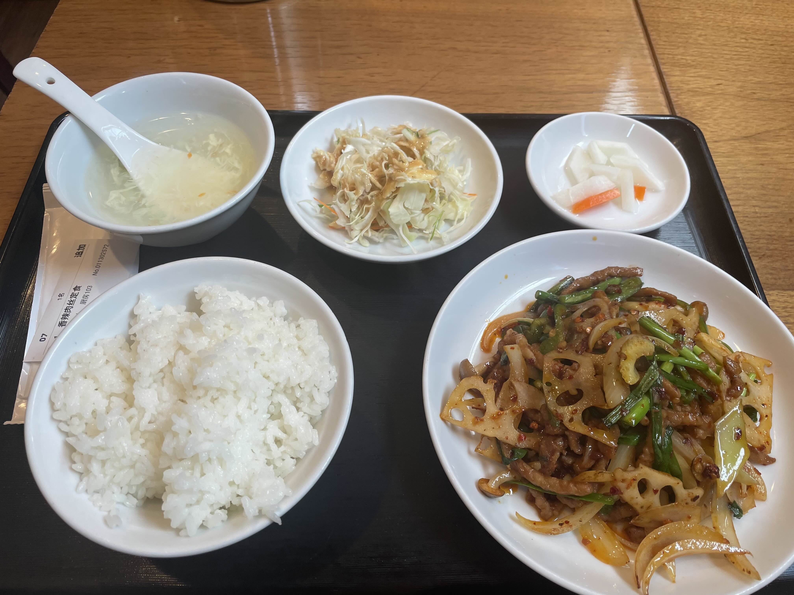

揚げ豚肉の四川風炒め

この料理が川外川の定食の中で一番美味しいと思う。
この料理の中国語は香辣肉糸である。香り高く（香）辛めの（辣）細切り豚肉（肉糸）炒め（-）、という意味である。
具材は油通しした豚肉に、野菜はニンニクの芽・玉ねぎ・ニラ・シメジ・れんこん・セロリである。
とにかく鼻に抜ける香りがすばらしい。そしてまさに旨辛といえるいい塩梅の辛さも、無二のものである。
油を吸ったシメジとニラも幸せであるし、油通しのおかげで硬くなっていない豚肉も言うまでもない。
とにかくこれは中華料理にしかできない味だよなあ、といつも思っている。木曜日の昼しか食べるチャンスがないのが非常に残念だ。
← メニュー一覧に戻る